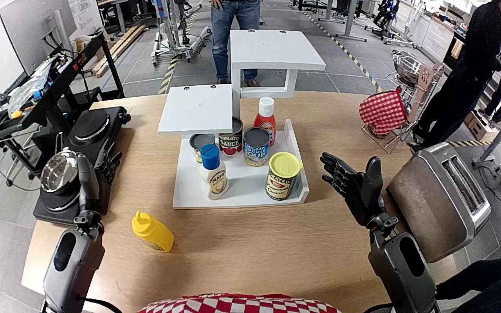

NVIDIA GR1 · 98
Video 98

Visual review action_review.json
{
"prompt_protocol": "humanoid_action_v1",
"prompt_provenance": "visually_authored_from_video_and_initial_frame",
"reviewed_contact_sheets": [
"sheet_001.jpg"
],
"inspected_frame_stride": 2,
"inspected_sampled_frame_count": 60,
"initial_scene": "Robot-mounted forward/downward view shows both arms extending from the lower body-side edges. A yellow mustard squeeze bottle stands on the bare tabletop before the white stepped shelf; its middle platform is empty. Other containers occupy the lower level.",
"observed_sequence": [
{
"source_frame_start": 0,
"source_frame_end": 24,
"observation": "Both hands are open; yellow bottle remains upright on tabletop.",
"confidence": "high"
},
{
"source_frame_start": 25,
"source_frame_end": 62,
"observation": "Left forearm moves toward bottle with fingers spread, bringing palm and thumb around opposite sides of bottle body. Right hand stays open and away from the object.",
"confidence": "high"
},
{
"source_frame_start": 63,
"source_frame_end": 78,
"observation": "Left fingers close around bottle body; bottle becomes upright within hand and begins lifting clear of table.",
"confidence": "high"
},
{
"source_frame_start": 79,
"source_frame_end": 100,
"observation": "Left arm lifts and carries bottle upright upward and forward toward middle shelf; no hand transfer or right-hand support occurs.",
"confidence": "high"
},
{
"source_frame_start": 101,
"source_frame_end": 114,
"observation": "Left hand lowers bottle onto middle white shelf, with base at platform surface. Fingers and thumb remain around bottle.",
"confidence": "high"
},
{
"source_frame_start": 115,
"source_frame_end": 119,
"observation": "Bottle remains upright on middle shelf. Left fingers start spreading/opening behind bottle, thumb remains near its front, and hand does not withdraw clear.",
"confidence": "high"
}
],
"arm_hand_roles": {
"left": "Active manipulation: opens around bottle, closes fingers/thumb around body, lifts and transports upright, lowers onto middle shelf and begins opening fingers.",
"right": "Open and approximately stationary near the right side; does not touch bottle or assist."
},
"anatomical_side_evidence": "The forward/downward robot-mounted perspective shows the two forearms extending from the robot-side lower left and lower right respectively. The active arm connects to the lower-left body-side joint, and its thumb points medially toward the counterpart arm during approach; therefore it is robot-relative left, corroborating the source instruction. The robot head/shoulders are outside the camera view.",
"coordination": "Single-hand manipulation with the left hand; no bimanual support or transfer.",
"uncertainties": [
"Full finger disengagement from the bottle is obscured by the bottle body and no withdrawal is shown; a complete release cannot be confirmed despite visible opening of fingers."
],
"annotation_discrepancies": [],
"evidence_frame_indices": [
0,
36,
56,
74,
90,
102,
108,
114,
116,
118,
119
],
"selected_execution_status": "incomplete",
"terminal_state": "Yellow mustard bottle stands upright with its base on the middle white shelf. The left hand is still beside/around it with fingers beginning to open; the right hand remains open and uninvolved. Full release and withdrawal are not established.",
"video_id": "98",
"dataset": "NVIDIA_GR1_100",
"dedicated_review_agent": "review_gr1_98",
"review_source_video": "NVIDIA_GR1_100/98/original/original.mp4",
"source_frame_count": 120,
"source_fps": 20.0,
"native_detail_frames": [
36,
56,
74,
90,
102,
108,
114,
116,
118,
119
],
"world_model_prompt": "The robot grasps the yellow mustard bottle around its body with its left hand, lifts it from the table, and carries it upright to the white shelf’s middle level. It lowers the bottle upright onto that shelf and begins opening its fingers, with the left hand remaining beside the bottle. Keep the camera fixed; preserve robot geometry, physically valid joint motion, and normal gripper opening and closing.",
"original_task_instruction": "Use the left hand to pick up yellow mustard bottle from tan table to middle level of white shelf.",
"selected_segment": {
"start_frame": 0,
"end_frame_exclusive": 120,
"reason": "Complete original single-task reference; no cropping or trimming requested."
},
"source_video_sha256": "83529d0c8e5b092c5bb22528e33f8b8570a6d2af7c2aa45aa2cdb8db75965148",
"review_completed_at": "2026-10-13T18:42:40.951133+00:00"
}